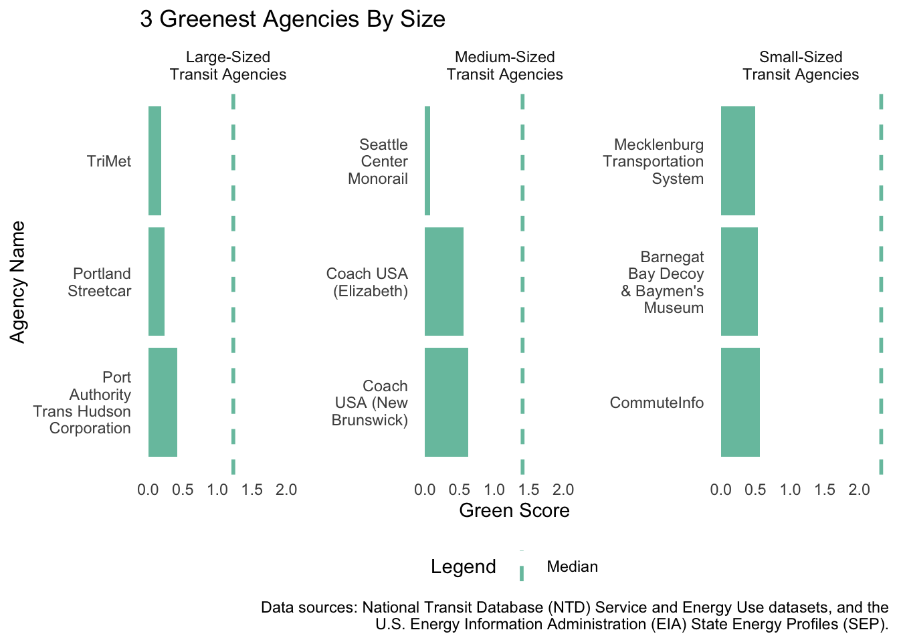
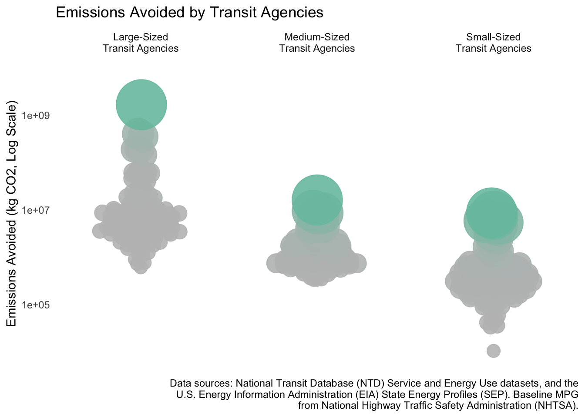
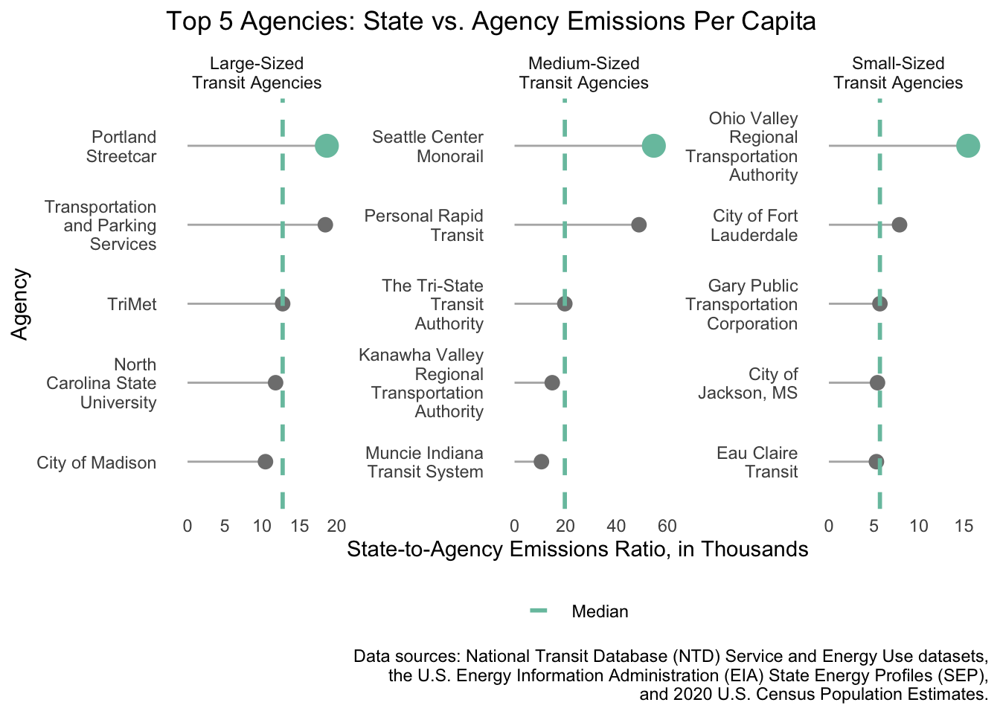
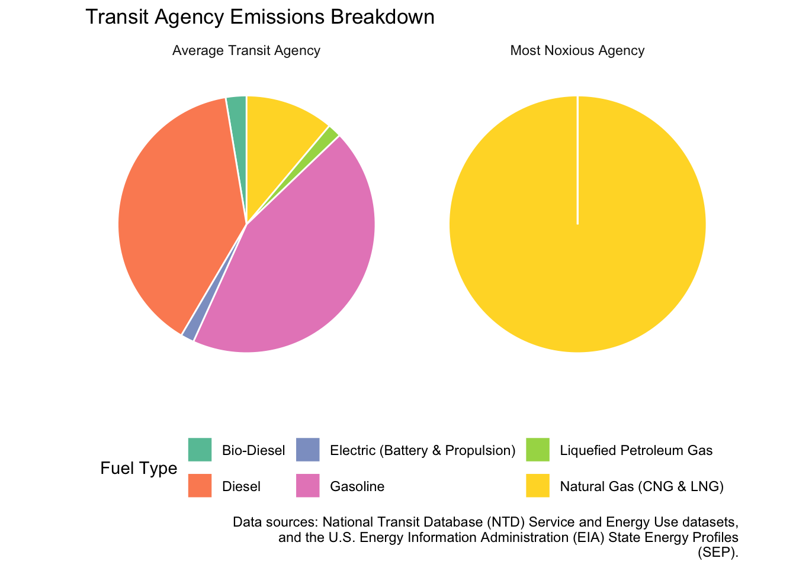

Since 1997, the Green Transit Alliance for Investigation of Variance (GTA IV) scours publicly available transit data to honor the transportation agencies that champion environmental responsibility in their operations. On March 1 2025, GTA IV presented awards at the annual Greenies in New York City. “These awards highlight the incredible efforts of transit agencies committed to sustainability,” said Jocely Lopez Luna, Executive Director of GTA IV, in her opening statement at the Noli Timere theater. Small-, medium-, and large-sized transit agencies were awarded for their excellence in three categories:
Greenest Transit Agency,
Most Emissions Avoided,
Green Giant.
While the Greenies celebrate sustainability leaders, GTA IV also holds accountable those agencies that fall short. This year, the organization introduced the Noxious rating. Before handing out the ratings, Lopez Luna expressed a plucky, “hope that [these transit agencies] will reflect on and lessen the environmental impact of [their] operations.”
The Greenie Goes To…
Greenest Transit Agency
Three winners took home Greenies for Greenest Transit Agency:
Greenest Small-sized Transit Agency:
Mecklenburg County, dba: Mecklenburg Transportation System from Charlotte, North Carolina, boasting a green score of \(0.49\).
Greenest Medium-sized Transit Agency:
City of Seattle, dba: Seattle Center Monorail from Seattle, Washington, with an impressively low green score of \(0.07\).
Greenest Large-sized Transit Agency:
Tri-County Metropolitan Transportation District of Oregon, dba: TriMet, from Portland, Oregon, earning a green score of \(0.19\).
GTA IV’s green score was calculated from the geometric mean2 of agency emissions per capita (EPC) and agency emissions per mile (EPM)–with lower green scores meaning greener agencies. When asked about the win, TriMet’s representative proudly declared above the roaring crowd: “We do it for our riders–because they can’t take trips if they’ve died from air pollution.”
Most Emissions Avoided
The three winners of the Greenies for Most Emissions Avoided were:
Small-sized Transit Agency:
Hampton Jitney, Inc. from Calverton, New York, which offset an estimated \(8,586,353\) kg of carbon dioxide (\(\text{CO}_2\)). The median value of offset emissions for small-sized agencies was \(327,703\) kg.
Medium-sized Transit Agency:
Hudson Transit Lines, Inc., dba: Short Line from Mahwah, New Jersey, which offset \(16,147,490\) kg of \(\text{CO}_2\). For comparison, the median value of offset emissions for a medium-sized agency was \(974,179\) kg.
Large-sized Transit Agency:
MTA New York City Transit from Brooklyn, New York which offset a whopping \(1,662,602,856\) kg of \(\text{CO}_2\)–almost 300 times the median offset emissions for a large-sized agency (\(6,102,619\) kg).
Analysts at GTA IV determined the total emissions avoided by first calculating the number of gallons of gasoline required for the newest model car to travel the same distance as each transit agency. This figure was then multiplied by the average emissions rate of motor gasoline, as defined by U.S. CAFE standards ((NHTSA), 2022).
“People may be getting burned alive on our subways, but at least we’re stopping our riders from burning all that carbon,” said Don Vitiatus, CEO of the MTA, following Jay-Z’s heartfelt rendition of Empire State of Mind.
Green Giant
Three agencies were awarded Greenies for outstanding performance in their state.
Small-sized Transit Agency:
Ohio Valley Regional Transportation Authority from Wheeling, West Virginia, whose state’s electricity EPC is \(15479.34\) times larger than their EPC. To compare, the median factor of difference for small-sized agencies was \(5,670\).
Medium-sized Transit Agency:
City of Seattle, dba: Seattle Center Monorail from Seattle, Washington, with a factor of \(54,628\) difference between their EPC and their state’s electricity EPC–almost 3 times the median factor of difference for medium sized-agencies (\(19,700\)).
Large-sized Transit Agency:
City of Portland, dba: Portland Streetcar from Portland, Oregon, whose state’s EPC is \(18,650\) times larger than their own. Among large-sized agencies, the median factor of difference was about \(12,700\).
This metric compares state emissions per capita with agency emissions per capita. Agencies with the largest metrics are awarded for outstanding performance compared to their state. “We will continue to take West Virginians home down country roads in a green way, and we hope our Mountain Mama will follow our lead,” said a representative from the Ohio Valley Regional Transportation Authority.
Noxious Ratings
While some transit agencies set the gold standard for sustainability, others rely heavily on high-emission fuels. Natural gas, with average \(\text{CO}_2\) emissions of \(410,043\) kg per gallon, is by far the most polluting transportation fuel. Therefore, GTA IV handed out Noxious ratings to the three agencies with the highest percentage of their total emissions coming from natural gas.
Small-sized Transit Agency:
City of Albany, dba: Albany Transit System from Albany, Georgia, with \(99.99999\%\) of their total emissions being derived from natural gas. For comparison, the average small-sized transit agency derives \(11.1\%\) of its emissions from natural gas.
Medium-sized Transit Agency:
Birmingham-Jefferson County Transit Authority from Birmingham, Alabama with \(99.99993\%\) of their total emissions coming from natural gas. The typical medium-sized transit agency gets \(18.6\%\) of its emissions from natural gas.
Large-sized Transit Agency:
County of Nassau, dba: Nassau Inter County Express from Mineola, New York, with \(99.99984\%\) of total emissions from natural gas–far exceeding the large-agency average of \(28.7\%\).
To help recipients of the Noxious rating truly understand the impact of natural gas on the environment, GTA IV staged an unforgettable closing ceremony. A harmless yet pungent gas was released on stage, allowing awardees to experience their contribution to air pollution firsthand. “What is that smell?!” gasped a Nassau Inter County Express representative between coughs, while Albany Transit System’s Chief Legal Officer, Sue Salot, wasted no time in threatening legal action against GTA IV.
After the olfactory assault, GTA IV announced their intention to continue funding grants for transit agencies committed to reducing their environmental impact. “We implore all of you to look deep within your operations and find ways to minimize your footprint. The world we inherit also belongs to those who come after us,” stated Lopez Luna before dropping her microphone.
The data sets were cleaned up as in the code below:
Code
# ConstantsMPG <-49# standard vehicle fuel economy for 2026.MCF_TO_GALLONS <-7.48052*1000# conversion factor for metric cubic feet to gallons.MINTY <-"#78c2ad"set.seed(now())# Facet labelsFACET_BY_SIZE_LABELS <-c("Small"="Small-Sized\nTransit Agencies","Medium"="Medium-Sized\nTransit Agencies","Large"="Large-Sized\nTransit Agencies")# clean up mode entries in ntd energyNTD_ENERGY <- NTD_ENERGY |>mutate(Mode=case_when( Mode =="HR"~"Heavy Rail", Mode =="AR"~"Alaska Railroad", Mode =="CB"~"Commuter Bus", Mode =="CC"~"Cable Car", Mode =="CR"~"Commuter Rail", Mode =="DR"~"Demand Response", Mode =="FB"~"Ferryboat", Mode =="IP"~"Inclined Plane", Mode =="LR"~"Light Rail", Mode =="MB"~"Bus", Mode =="MG"~"Monorail and Automated Guideway modes", Mode =="PB"~"Publico", Mode =="RB"~"Bus Rapid Transit", Mode =="SR"~"Streetcar Rail", Mode =="TB"~"Trolleybus", Mode =="TR"~"Aerial Tramways", Mode =="VP"~"Vanpool", Mode =="YR"~"Hybrid Rail",TRUE~"Unknown"))# clean up fuel co2 emissions data.co2_vol_mass <- co2_vol_mass |>rename(co2_factors ="Carbon Dioxide Emissions Coefficients by Fuel",pounds_co2 ="...2",pounds_co2_per_unit ="...3",kg_co2 ="...4",kg_co2_per_unit ="...5",pounds_co2_per_mil_btu ="...6",kg_co2_per_mil_btu ="...7" ) |>filter(!is.na(pounds_co2),!is.na(pounds_co2_per_unit),!is.na(kg_co2),!is.na(kg_co2_per_unit),!is.na(pounds_co2_per_mil_btu),!is.na(kg_co2_per_mil_btu)) |>mutate(pounds_co2 =as.numeric(pounds_co2),kg_co2 =as.numeric(kg_co2),pounds_co2_per_mil_btu =as.numeric(pounds_co2_per_mil_btu),kg_co2_per_mil_btu =as.numeric(kg_co2_per_mil_btu), )# clean up state population dataNST_EST_POP <- NST_EST_POP |>rename(state ="table with row headers in column A and column headers in rows 3 through 4. (leading dots indicate sub-parts)",population ="...7", ) |>select(state,population) |>mutate(state =str_remove(state, "^\\.+")) |>filter(!is.na(population),!is.na(state))
Analysis of EIA State Electricity Data Set
The code below details the analysis of the EIA State Electricity dataset.
Code
# Which state has the most expensive retail electricity?most_expensive_state <- EIA_SEP_REPORT |>slice_max(electricity_price_MWh, n =1) |>select(!abbreviation) |>rename(`Pounds of CO$_2$ Emitted per MWh of Electricity Produced`= CO2_MWh, `Primary Source of Electricity Generation`= primary_source,`Average Retail Price for 1000 kWh`= electricity_price_MWh,`Total Generation Capacity (MWh)`= generation_MWh,State = state ) |>mutate(`Pounds of CO$_2$ Emitted per MWh of Electricity Produced`=comma(`Pounds of CO$_2$ Emitted per MWh of Electricity Produced`),`Total Generation Capacity (MWh)`=comma(`Total Generation Capacity (MWh)`),`Average Retail Price for 1000 kWh`=dollar(`Average Retail Price for 1000 kWh`, accuracy =0.01) )kable(most_expensive_state, caption ="State with the Most Expensive Retail Electricity")
State with the Most Expensive Retail Electricity
Pounds of CO\(_2\) Emitted per MWh of Electricity Produced
Primary Source of Electricity Generation
Average Retail Price for 1000 kWh
Total Generation Capacity (MWh)
State
1,444
Petroleum
$386.00
9,194,164
Hawaii
Code
# Which state has the ‘dirtiest’ electricity mix?dirtiest_state <- EIA_SEP_REPORT |>slice_max(CO2_MWh, n =1) |>select(!abbreviation) |>rename(`State`= state,`Pounds of CO$_2$ Emitted per MWh of Electricity Produced`= CO2_MWh,`Primary Source of Electricity Generation`= primary_source,`Total Generation Capacity (MWh)`= generation_MWh,`Average Retail Price for 1000 kWh`= electricity_price_MWh ) |>mutate(`Pounds of CO$_2$ Emitted per MWh of Electricity Produced`=comma(`Pounds of CO$_2$ Emitted per MWh of Electricity Produced`),`Total Generation Capacity (MWh)`=comma(`Total Generation Capacity (MWh)`),`Average Retail Price for 1000 kWh`=dollar(`Average Retail Price for 1000 kWh`, accuracy =0.01) )kable(dirtiest_state, caption ="State with the Dirtiest Electricity Mix")
State with the Dirtiest Electricity Mix
Pounds of CO\(_2\) Emitted per MWh of Electricity Produced
Primary Source of Electricity Generation
Average Retail Price for 1000 kWh
Total Generation Capacity (MWh)
State
1,925
Coal
$102.60
52,286,784
West Virginia
Code
# On average, how many pounds of CO2 are emitted per MWh of electricity produced in the US?weighted_avg_co2 <- EIA_SEP_REPORT |>summarize(`Weighted Average CO$_2$ Emissions (lbs/MWh)`=sum(CO2_MWh * generation_MWh) /sum(generation_MWh) ) |>mutate(`Weighted Average CO$_2$ Emissions (lbs/MWh)`=comma(`Weighted Average CO$_2$ Emissions (lbs/MWh)`))kable(weighted_avg_co2, caption ="Weighted Average CO2 Emissions per MWh in the US")
Weighted Average CO2 Emissions per MWh in the US
Weighted Average CO\(_2\) Emissions (lbs/MWh)
805
Code
# What is the rarest primary energy source in the US?rarest_source <- EIA_SEP_REPORT |>group_by(primary_source) |>summarize(`Number of States Using This Source`=n()) |>slice_min(`Number of States Using This Source`, n =1) |>pull(primary_source)rarest_source_data <- EIA_SEP_REPORT |>filter(primary_source == rarest_source) |>select(primary_source, electricity_price_MWh, state) |>rename(`Primary Source of Electricity Generation`= primary_source,`Average Retail Price for 1000 kWh`= electricity_price_MWh,`State`= state ) |>mutate(`Average Retail Price for 1000 kWh`=dollar(`Average Retail Price for 1000 kWh`, accuracy =0.01) )kable(rarest_source_data, caption ="Rarest Primary Energy Source and Its Associated Cost")
Rarest Primary Energy Source and Its Associated Cost
Primary Source of Electricity Generation
Average Retail Price for 1000 kWh
State
Petroleum
$386.00
Hawaii
Code
# How many times cleaner is NY’s energy mix than Texas'?tx_co2 <- EIA_SEP_REPORT |>filter(state =="Texas") |>pull(CO2_MWh)ny_co2 <- EIA_SEP_REPORT |>filter(state =="New York") |>pull(CO2_MWh)cleaner_ratio <-data.frame(`State`=c("Texas", "New York"),`Pounds of CO$_2$ Emitted per MWh of Electricity Produced`=c(tx_co2, ny_co2),`Times Cleaner (TX/NY)`=c(NA, round(tx_co2 / ny_co2, 2))) |>rename("Pounds of CO$_2$ Emitted per MWh of Electricity Produced"="Pounds.of.CO._2..Emitted.per.MWh.of.Electricity.Produced",`Times Cleaner (TX/NY)`="Times.Cleaner..TX.NY." ) |>mutate(`Pounds of CO$_2$ Emitted per MWh of Electricity Produced`=comma(`Pounds of CO$_2$ Emitted per MWh of Electricity Produced`) )kable(cleaner_ratio, caption ="Comparison of CO2 Emissions Between Texas and New York")
Comparison of CO2 Emissions Between Texas and New York
State
Pounds of CO\(_2\) Emitted per MWh of Electricity Produced
Times Cleaner (TX/NY)
Texas
855
NA
New York
522
1.64
Analysis of NTD Service Data Set
The code below details the analysis of the NTD Service dataset.
Code
# Which transit service has the most UPT annually?most_upt <- NTD_SERVICE |>select(`NTD ID`, Agency, City, State, UPT) |>mutate(UPT =comma(UPT)) |>slice_max(UPT, n =1)kable(most_upt, caption ="Transit Service with the Most UPT Annually")
Transit Service with the Most UPT Annually
NTD ID
Agency
City
State
UPT
50058
Rockford Mass Transit District
Rockford
IL
994,754
Code
# What is the average trip length of a trip on MTA NYC?avg_mta_trip <- NTD_SERVICE |>filter(Agency =="MTA New York City Transit") |>mutate(`Average Trip Length (miles)`=comma(MILES / UPT)) |>select(`NTD ID`, Agency, City, State, `Average Trip Length (miles)`)kable(avg_mta_trip, caption ="Average Trip Length on MTA NYC Transit")
Average Trip Length on MTA NYC Transit
NTD ID
Agency
City
State
Average Trip Length (miles)
20008
MTA New York City Transit
Brooklyn
NY
4
Code
# Which transit service in NYC has the longest average trip length?nyc_longest_avg <- NTD_SERVICE |>filter(State =="NY", City =="New York"| City =="Brooklyn") |>mutate(`Average Trip Length (miles)`= MILES / UPT) |>slice_max(`Average Trip Length (miles)`, n =1) |>select(`NTD ID`, Agency, City, State, `Average Trip Length (miles)`)kable(nyc_longest_avg, caption ="NYC Transit Service with the Longest Average Trip Length")
NYC Transit Service with the Longest Average Trip Length
NTD ID
Agency
City
State
Average Trip Length (miles)
20100
MTA Long Island Rail Road
New York
NY
24.25799
Code
# Which state has the fewest total miles traveled by public transit?state_fewest_miles <- NTD_SERVICE |>group_by(State) |>summarize(`Total Miles`=comma(sum(MILES, na.rm =TRUE))) |>slice_min(`Total Miles`, n =1)kable(state_fewest_miles, caption ="State with the Fewest Total Miles Traveled by Public Transit")
State with the Fewest Total Miles Traveled by Public Transit
State
Total Miles
WA
1,059,910,614
Code
# Are all states represented in this data? If no, which ones are missing?missing_states <- EIA_SEP_REPORT |>anti_join(NTD_SERVICE, join_by("abbreviation"=="State")) |>rename(`Missing States`= state) |>select(`Missing States`)kable(missing_states, caption ="States Missing from the Transit Data")
States Missing from the Transit Data
Missing States
Arizona
Arkansas
California
Colorado
Hawaii
Iowa
Kansas
Louisiana
Missouri
Montana
Nebraska
Nevada
New Mexico
North Dakota
Oklahoma
South Dakota
Texas
Utah
Wyoming
Combining Data Sources
The following process was used to merge the primary datasets:
This section provides a brief summary of the key metrics used in the analysis and the code used to identify the most–and least–environmentally friendly transit agencies.
Greenest Transit Agency
GTA IV calculates the green score as,
\[\text{Green Score} = \sqrt{\text{Emissions per Capita} \cdot \text{Emissions per Mile}}\] Lower scores indicate more environmentally friendly agencies. The table below presents the small-, medium-, and large-sized transit agencies with the lowest green score.
Code
# grouping for ease of usegreen_scores <- agency_modes |>group_by(size, ntd_id) |>summarize(agency =first(agency),city =first(city),state =first(state),green_score =first(green_score),.groups ='drop' ) |>ungroup()# Select the greenest agency per size categorygreenest_agencies <- green_scores |>group_by(size) |>slice_min(green_score, n =1) |>select(Agency = agency, City = city, State = state, `Green Score`= green_score)# Compute median green score per size categorymedian_green <- green_scores |>group_by(size) |>summarise(median_green =median(green_score, na.rm =TRUE))# Display table of greenest agencies with nice formattinggreenest_agencies |>left_join(median_green, join_by("size"=="size")) |>rename("Agency Size"= size,"Median Green Score"= median_green ) |>kable(caption ="**Greenest Transit Agency in Each Size Category**")
Greenest Transit Agency in Each Size Category
Agency Size
Agency
City
State
Green Score
Median Green Score
Large
Tri-County Metropolitan Transportation District of Oregon, dba: TriMet
Portland
Oregon
0.19
1.230
Medium
City of Seattle, dba: Seattle Center Monorail
Seattle
Washington
0.07
1.410
Small
Mecklenburg County , dba: Mecklenburg Transportation System
Charlotte
North Carolina
0.49
2.315
The figure below presents the top three greenest transit agencies in each size category.
Code
# create tibble with data that will go on plotgreen_agencies_plot <- agency_modes |>group_by(size, ntd_id) |>summarize(agency =first(agency),city =first(city),state =first(state),green_score =first(green_score) ) |>slice_min(green_score, n =3, with_ties =FALSE) |>ungroup() |>left_join(median_green, join_by("size"=="size"))# Fix agency names, and fix case for sizegreen_agencies_plot <- green_agencies_plot |>mutate(agency =str_replace_all(agency, "-", " ")) |>mutate(agency =case_when(str_detect(agency, ", dba:") ==TRUE~str_wrap(str_extract(agency, "(?<=, dba: ).*"), width =12),TRUE~str_wrap(agency, width =12) ) ) |>group_by(agency) |>mutate(agency =case_when(n() >1~str_wrap(paste0(agency, " (", city, ")"), width =12),TRUE~ agency ) ) |>ungroup()# plot codeggplot(green_agencies_plot, aes(y =fct_reorder(agency, -green_score), x = green_score)) +geom_col(fill = MINTY) +geom_vline(data = median_green, aes(xintercept = median_green, linetype ="Median"),color = MINTY, linewidth =1) +labs(x ="Green Score",y ="Agency Name",title ="3 Greenest Agencies By Size",linetype ="Legend",caption =str_wrap("Data sources: National Transit Database (NTD) Service and Energy Use datasets, and the U.S. Energy Information Administration (EIA) State Energy Profiles (SEP).", width =90) ) +scale_linetype_manual(values =c("Median"="dashed")) +scale_x_continuous(breaks =seq(0, 2, by =0.5)) +theme_minimal() +theme(panel.grid =element_blank(),legend.position ="bottom" ) +facet_wrap(~size, scales ="free_y", labeller =labeller(size = FACET_BY_SIZE_LABELS))

Emissions Avoided
GTA IV found the emissions avoided using,
\[\text{Avoided Emissions} = (\text{Passenger Miles}\cdot\text{Avg Car Emissions}) - \text{Agency Emissions}\]
Average gasoline vehicle efficiency was used as the baseline ((NHTSA), 2022). The table below presents the small-, medium-, and large-sized agencies with the largest mass of emissions avoided. The median value of avoided emissions is also provided for each agency size.
Code
# Compute emissions avoided per agencyemissions_avoided <- agency_modes |>group_by(size, ntd_id) |>summarise(agency =first(agency),city =first(city),state =first(state),emissions_avoided =first((miles / MPG) * co2_vol_mass |>filter(co2_factors =="Finished Motor Gasoline") |>pull(kg_co2)) ) |>slice_max(emissions_avoided, n =1) # Select agency with highest emissions avoided per size# Compute emissions avoided for all agencies, sortedbubble_data <- agency_modes |>group_by(size, ntd_id) |>summarise(agency =first(agency),city =first(city),state =first(state),miles =first(miles),emissions_avoided =first((miles / MPG) * co2_vol_mass |>filter(co2_factors =="Finished Motor Gasoline") |>pull(kg_co2)) ) |>arrange(desc(emissions_avoided))# Calculate median emissions avoided per sizemedian_emissions_avoided <- bubble_data |>group_by(size) |>summarize(median_emissions =median(emissions_avoided, na.rm =TRUE))emissions_avoided |>left_join(median_emissions_avoided, join_by(size == size)) |>rename(`Agency`= agency,`Size`= size, `NTD ID`= ntd_id, `City`= city, `State`= state, `Emissions Avoided (kg CO2)`= emissions_avoided, `Median Emissions Avoided`= median_emissions) |>kable(digits =2, format.args =list(big.mark =","), caption ="Top Agencies by Emissions Avoided (kg CO2)")
Top Agencies by Emissions Avoided (kg CO2)
Size
NTD ID
Agency
City
State
Emissions Avoided (kg CO2)
Median Emissions Avoided
Large
20,008
MTA New York City Transit
Brooklyn
New York
1,662,602,856
6,102,619.2
Medium
20,126
Hudson Transit Lines, Inc., dba: Short Line
Mahwah
New Jersey
16,147,490
974,179.2
Small
20,217
Hampton Jitney, Inc.
Calverton
New York
8,586,353
327,702.6
The figure below presents the emissions avoided by different sized transit agencies.
Code
# Normalize sizes and colors within each size categorybubble_data <- bubble_data |>group_by(size) |>mutate(size_scaled = scales::rescale(emissions_avoided, to =c(5, 20)),color_scaled = scales::rescale(emissions_avoided, to =c(0, 1)) ) |>ungroup() |>arrange(emissions_avoided)# Plot emissions avoided by transit agenciesggplot(bubble_data, aes(x = size, y = emissions_avoided, size = size_scaled, color = color_scaled)) +geom_quasirandom(alpha =0.9, width =0.3) +scale_y_log10() +coord_cartesian(ylim =c(min(bubble_data$emissions_avoided) *0.8, max(bubble_data$emissions_avoided) *5)) +scale_size_continuous(range =c(5, 20)) +scale_color_gradient(low ="gray75", high = MINTY) +labs(title ="Emissions Avoided by Transit Agencies",x ="",y ="Emissions Avoided (kg CO2, Log Scale)",caption =str_wrap("Data sources: National Transit Database (NTD) Service and Energy Use datasets, and the U.S. Energy Information Administration (EIA) State Energy Profiles (SEP). Baseline MPG from National Highway Traffic Safety Administration (NHTSA).", width =90) ) +theme_minimal() +theme(legend.position ="none",panel.grid =element_blank(),axis.title.x =element_blank(),axis.text.x =element_blank() ) +facet_wrap(~ size, scales ="free_x", labeller =labeller(size = FACET_BY_SIZE_LABELS))

Green Giant
GTA IV identified the Statal Eco-Leader using the following metric:
\[\text{State Factor} = \frac{\text{State’s Emissions per Capita}}{\text{Agency’s Emissions per Capita}}\]
This metric highlights agencies that achieve greater environmental efficiency compared to the average emissions per capita in their respective states.
The table below shows agencies with highest state-to-agency emissions ratio. The higher the ratio, the better the agency’s performance.
Code
# Compute state emissions per capita and ratio to agency emissionsstatal_scores <- agency_modes |>inner_join(NST_EST_POP, join_by(state == state)) |>mutate(state_emissions_per_capita = (co2_mwh * generation_MWh) / population,ratio_in_k = state_emissions_per_capita / (agency_emissions_per_capita *10^3) ) |>distinct(ntd_id, .keep_all =TRUE)# Get the top agency with the highest ratio per size categorytop_statal <- statal_scores |>group_by(size) |>slice_max(ratio_in_k, n =1, with_ties =FALSE) |>ungroup()# Get the top 5 agencies per size categorytop_5 <- statal_scores |>group_by(size) |>slice_max(ratio_in_k, n =5) |>ungroup()# Calculate the median ratio for each size categorymedian_ratios <- top_5 |>group_by(size) |>summarise(median_ratio =median(ratio_in_k)) # Format agency names for better readabilitytop_5 <- top_5 |>mutate(agency =case_when(str_detect(agency, ", dba:") ==TRUE~str_wrap(str_extract(agency, "(?<=, dba: ).*"), width =15),TRUE~str_wrap(agency, width =15) ) ) |>group_by(agency) |>mutate(agency =case_when(n() >1~str_wrap(paste0(agency, " (", city, ")"), width =15),TRUE~ agency ) ) |>ungroup()# table of agencies with highest state to agency emissions ratio. top_statal |>select(size, agency,city,state,ratio_in_k) |>left_join(median_ratios, join_by(size==size)) |>mutate(`State-to-Agency Ratio`= ratio_in_k * (10^3),`Median State-to-Agency Ratio`= median_ratio *10^3 ) |>select(-c(ratio_in_k, median_ratio)) |>rename(`Size`= size,`Agency`= agency, `City`= city, `State`= state, ) |>kable(caption ="Agencies with the Highest State-to-Agency Emissions Ratio")
Agencies with the Highest State-to-Agency Emissions Ratio
The plot below presents the top 5 agencies outperforming their states in emissions per capita.
Code
# Create the lollipop plotggplot(top_5, aes(x =reorder(agency, ratio_in_k), y = ratio_in_k)) +geom_segment(aes(xend = agency, y =0, yend = ratio_in_k), color ="gray70") +geom_point(color ="gray50", size =3) +geom_point(data = top_statal, aes(y = ratio_in_k), color = MINTY, size =5) +geom_hline(data = median_ratios, aes(yintercept = median_ratio, linetype ="Median"),color = MINTY, linewidth =1) +coord_flip() +facet_wrap(~size, scales ="free", labeller =labeller(size = FACET_BY_SIZE_LABELS)) +scale_y_continuous(expand =expansion(mult =0.15)) +scale_linetype_manual(name =NULL, values =c("Median"="dashed")) +labs(title ="Top 5 Agencies: State vs. Agency Emissions Per Capita",x ="Agency",y ="State-to-Agency Emissions Ratio, in Thousands",caption =str_wrap("Data sources: National Transit Database (NTD) Service and Energy Use datasets, the U.S. Energy Information Administration (EIA) State Energy Profiles (SEP), and 2020 U.S. Census Population Estimates.") ) +theme_minimal() +theme(panel.grid =element_blank(),legend.position ="bottom" )

Noxious Rating
Since natural gas was the “dirtiest” fuel type in this data set, GTA IV identified agencies deserving of the Noxious Rating as those with the highest percentage of their total emissions coming from natural gas. The table below presents the small-, medium-, and large-sized agencies with the highest proportion of emissions from natural gas.
Code
# Compute percentage of emissions from natural gas per agencynoxious_scores <- agency_modes |>group_by(size, ntd_id) |>summarise(agency =first(agency),state =first(state),city =first(city),total_natural_gas_of_agency =sum(cnaturalgas_emissions + liqnatgas_emissions, na.rm =TRUE),percent_of_total_emissions = (total_natural_gas_of_agency *100) /first(total_emissions_of_agency),.groups ="drop" )# Find the agency with the highest % of emissions from natural gas in each size categorynoxious_winners <- noxious_scores |>group_by(size) |>slice_max(percent_of_total_emissions, n =1, with_ties =FALSE)# table of winning agenciesnoxious_winners |>select(-total_natural_gas_of_agency,ntd_id) |>rename(`Size`= size,`NTD ID`= ntd_id,`Agency`= agency, `City`= city, `State`= state, `Natural Gas Emissions (%)`= percent_of_total_emissions ) |>kable(digits =5, caption ="Agencies with the Highest Natural Gas Emissions Percentage")
Agencies with the Highest Natural Gas Emissions Percentage
Size
NTD ID
Agency
State
City
Natural Gas Emissions (%)
Large
20206
County of Nassau, dba: Nassau Inter County Express
The table below presents the average distribution of emissions at small-, medium-, and large-sized agencies.
Code
# Table of percentage of total emissions by fuel Type Across Transit Agency Sizes.mean_emissions_by_size |>pivot_longer(-c(size, ntd_id), names_to ="fuel_type", values_to ="pct_of_emissions") |>mutate(pct_of_emissions =round(pct_of_emissions *100, 5),fuel_type =case_when( fuel_type =="mean_bd"~"Bio-Diesel", fuel_type =="mean_diesel"~"Diesel", fuel_type =="mean_ng"~"C Natural Gas and Liquified Natural Gas", fuel_type =="mean_gas"~"Gasoline", fuel_type =="mean_battery"~"Electric (Propulsion and Battery)", fuel_type =="mean_hydrogen"~"Hydrogen", fuel_type =="mean_lpg"~"Liquified Petroleum Gas",TRUE~ fuel_type # Keep other names unchanged )) |>filter(fuel_type !="total_te") |>select(-ntd_id) |>pivot_wider(names_from = size,values_from = pct_of_emissions,names_prefix ="Emissions (%) - " ) |>rename(`Fuel Type`= fuel_type) |>kable(caption ="Percentage of Total Emissions by Fuel Type Across Transit Agency Sizes.")
Percentage of Total Emissions by Fuel Type Across Transit Agency Sizes.
Fuel Type
Emissions (%) - Large
Emissions (%) - Medium
Emissions (%) - Small
Bio-Diesel
5.05045
5.53451
2.61511
C Natural Gas and Liquified Natural Gas
29.69935
18.55579
11.11746
Diesel
47.36432
58.01950
38.93629
Gasoline
6.95929
12.95149
43.93558
Liquified Petroleum Gas
0.79746
0.78587
1.71727
Electric (Propulsion and Battery)
10.12913
4.15284
1.67828
The figure below compares the average emissions distribution of medium-sized agencies to that of the medium-sized agency with the highest proportion of natural gas emissions in the data set.
Code
# Get emissions breakdown for the most noxious agencynoxious_emissions_pie <- agency_modes |>filter(ntd_id == most_noxious_agency) |>summarise(total_me =sum(total_emissions_of_mode, na.rm =TRUE),mean_ng = (sum(cnaturalgas_emissions, na.rm =TRUE) +sum(liqnatgas_emissions, na.rm =TRUE)) / total_me,mean_diesel =sum(diesel_emissions, na.rm =TRUE) / total_me,mean_gas =sum(gasoline_emissions, na.rm =TRUE) / total_me,mean_lpg =sum(liqpetgas_emissions, na.rm =TRUE) / total_me,mean_battery = (sum(electricbattery_emissions, na.rm =TRUE) +sum(electricprop_emissions, na.rm =TRUE)) / total_me ) |>pivot_longer(cols =everything(), names_to ="fuel_type", values_to ="pct_of_emissions") |>mutate(type ="Most Noxious Agency")# Compute the **average** agency emissions breakdownavg_emissions_pie <- mean_emissions_by_size |>pivot_longer(-c(size,ntd_id), names_to ="fuel_type", values_to ="pct_of_emissions") |>filter(size ==unique(agency_modes |>filter(ntd_id == most_noxious_agency) |>pull(size)) ) |>mutate(type ="Average Transit Agency")# Combine both data sets for visualizationcombined_pie_data <-bind_rows(avg_emissions_pie, noxious_emissions_pie) |>mutate(fuel_type =recode(fuel_type,"mean_bd"="Bio-Diesel","mean_ng"="Natural Gas (CNG & LNG)","mean_diesel"="Diesel","mean_gas"="Gasoline","mean_lpg"="Liquefied Petroleum Gas","mean_battery"="Electric (Battery & Propulsion)" )) |>filter(pct_of_emissions <2)# Create pie chartggplot(combined_pie_data, aes(x ="", y = pct_of_emissions, fill = fuel_type)) +geom_col(width =1, color ="white") +coord_polar(theta ="y") +scale_fill_brewer(palette ="Set2") +labs(x ="", y ="", fill ="Fuel Type",title ="Transit Agency Emissions Breakdown",caption =str_wrap("Data sources: National Transit Database (NTD) Service and Energy Use datasets, and the U.S. Energy Information Administration (EIA) State Energy Profiles (SEP).") ) +theme_minimal() +theme(axis.text.x =element_blank(),axis.ticks =element_blank(),panel.grid =element_blank(),legend.position ="bottom" ) +facet_wrap(~ type)

###END###
Disclaimer: This press release is a fictional piece created for educational purposes. Any quotes, statements, or references to individuals, agencies, or organizations are entirely fictional and should not be interpreted as actual endorsements or statements made by real persons or entities.
Google Gemini. (2025). GTA IV-inspired cover illustration with urban transit elements. Generated using Google Gemini AI based on a prompt by [Your Name].
The geometric mean was chosen because EPC and EPM are on different scales.↩︎
Source Code
---title: "GTA IV Announces Winners of the 2025 Greenies"subtitle: "Recognizing the Nation’s Most Eco-Friendly Transit Agencies"author: Jocely Lopez Lunaformat: html: code-tools: true code-fold: true toc: true toc-location: right number-sections: false toc-depth: 3execute: eval: true messages: false warnings: falsebibliography: mp02_ref.bibcsl: apa.csl---![The Official 2025 Greenies Flyer[^1].](gtaiv_cover.jpeg)[^1]: This image was generated with Google Gemini [@google-gemini].Since 1997, the Green Transit Alliance for Investigation of Variance (GTA IV) scours publicly available transit data to honor the transportation agencies that champion environmental responsibility in their operations. On March 1 2025, GTA IV presented awards at the annual Greenies in New York City. “These awards highlight the incredible efforts of transit agencies committed to sustainability,” said Jocely Lopez Luna, Executive Director of GTA IV, in her opening statement at the Noli Timere theater. Small-, medium-, and large-sized transit agencies were awarded for their excellence in three categories: - Greenest Transit Agency,- Most Emissions Avoided,- Green Giant.While the Greenies celebrate sustainability leaders, GTA IV also holds accountable those agencies that fall short. This year, the organization introduced the Noxious rating. Before handing out the ratings, Lopez Luna expressed a plucky, "hope that [these transit agencies] will reflect on and lessen the environmental impact of [their] operations."# The Greenie Goes To...## Greenest Transit AgencyThree winners took home Greenies for Greenest Transit Agency:- Greenest Small-sized Transit Agency: - **Mecklenburg County, dba: Mecklenburg Transportation System** from Charlotte, North Carolina, boasting a green score of $0.49$.- Greenest Medium-sized Transit Agency: - **City of Seattle, dba: Seattle Center Monorail** from Seattle, Washington, with an impressively low green score of $0.07$.- Greenest Large-sized Transit Agency: - **Tri-County Metropolitan Transportation District of Oregon, dba: TriMet**, from Portland, Oregon, earning a green score of $0.19$.GTA IV's green score was calculated from the geometric mean[^2] of agency emissions per capita (EPC) and agency emissions per mile (EPM)--with lower green scores meaning greener agencies. When asked about the win, TriMet’s representative proudly declared above the roaring crowd: "We do it for our riders--because they can’t take trips if they’ve died from air pollution."[^2]: The geometric mean was chosen because EPC and EPM are on different scales.## Most Emissions AvoidedThe three winners of the Greenies for Most Emissions Avoided were:- Small-sized Transit Agency: - **Hampton Jitney, Inc.** from Calverton, New York, which offset an estimated $8,586,353$ kg of carbon dioxide ($\text{CO}_2$). The median value of offset emissions for small-sized agencies was $327,703$ kg.- Medium-sized Transit Agency: - **Hudson Transit Lines, Inc., dba: Short Line** from Mahwah, New Jersey, which offset $16,147,490$ kg of $\text{CO}_2$. For comparison, the median value of offset emissions for a medium-sized agency was $974,179$ kg.- Large-sized Transit Agency: - **MTA New York City Transit** from Brooklyn, New York which offset a whopping $1,662,602,856$ kg of $\text{CO}_2$--almost 300 times the median offset emissions for a large-sized agency ($6,102,619$ kg).Analysts at GTA IV determined the total emissions avoided by first calculating the number of gallons of gasoline required for the newest model car to travel the same distance as each transit agency. This figure was then multiplied by the average emissions rate of motor gasoline, as defined by U.S. CAFE standards [@NHTSA2022]."People may be getting burned alive on our subways, but at least we're stopping our riders from burning all that carbon," said Don Vitiatus, CEO of the MTA, following Jay-Z’s heartfelt rendition of *Empire State of Mind*.## Green GiantThree agencies were awarded Greenies for outstanding performance in their state.- Small-sized Transit Agency: - **Ohio Valley Regional Transportation Authority** from Wheeling, West Virginia, whose state's electricity EPC is $15479.34$ times larger than their EPC. To compare, the median factor of difference for small-sized agencies was $5,670$.- Medium-sized Transit Agency: - **City of Seattle, dba: Seattle Center Monorail** from Seattle, Washington, with a factor of $54,628$ difference between their EPC and their state's electricity EPC--almost 3 times the median factor of difference for medium sized-agencies ($19,700$).- Large-sized Transit Agency: - **City of Portland, dba: Portland Streetcar** from Portland, Oregon, whose state's EPC is $18,650$ times larger than their own. Among large-sized agencies, the median factor of difference was about $12,700$.This metric compares state emissions per capita with agency emissions per capita. Agencies with the largest metrics are awarded for outstanding performance compared to their state. "We will continue to take West Virginians home down country roads in a green way, and we hope our Mountain Mama will follow our lead," said a representative from the Ohio Valley Regional Transportation Authority.## Noxious RatingsWhile some transit agencies set the gold standard for sustainability, others rely heavily on high-emission fuels. Natural gas, with average $\text{CO}_2$ emissions of $410,043$ kg per gallon, is by far the most polluting transportation fuel. Therefore, GTA IV handed out Noxious ratings to the three agencies with the highest percentage of their total emissions coming from natural gas.- Small-sized Transit Agency: - **City of Albany, dba: Albany Transit System** from Albany, Georgia, with $99.99999\%$ of their total emissions being derived from natural gas. For comparison, the average small-sized transit agency derives $11.1\%$ of its emissions from natural gas.- Medium-sized Transit Agency: - **Birmingham-Jefferson County Transit Authority** from Birmingham, Alabama with $99.99993\%$ of their total emissions coming from natural gas. The typical medium-sized transit agency gets $18.6\%$ of its emissions from natural gas.- Large-sized Transit Agency: - **County of Nassau, dba: Nassau Inter County Express** from Mineola, New York, with $99.99984\%$ of total emissions from natural gas--far exceeding the large-agency average of $28.7\%$.To help recipients of the Noxious rating truly understand the impact of natural gas on the environment, GTA IV staged an unforgettable closing ceremony. A harmless yet pungent gas was released on stage, allowing awardees to experience their contribution to air pollution firsthand. "What is that smell?!" gasped a Nassau Inter County Express representative between coughs, while Albany Transit System’s Chief Legal Officer, Sue Salot, wasted no time in threatening legal action against GTA IV.After the olfactory assault, GTA IV announced their intention to continue funding grants for transit agencies committed to reducing their environmental impact. "We implore all of you to look deep within your operations and find ways to minimize your footprint. The world we inherit also belongs to those who come after us," stated Lopez Luna before dropping her microphone.# Appendix: Methodology and Analysis## Data Sources and RetrievalTransit data were obtained from the National Transit Database [@NTD2023] and the U.S. Department of Transportation Open Data Portal [@USDOT2023]. Emission factors were derived from the U.S. Energy Information Administration [@EIA2023; @EIA2024], while state population data were sourced from the U.S. Census [@usCensus2020s].Comparative metrics were calculated using R, leveraging packages including dplyr, ggplot2, readr, stringr, lubridate, forcats, ggbeeswarm, readxl, DT, and knitr [@R-core; @dplyr; @ggplot2; @readr; @stringr; @lubridate2023; @forcats2023; @ggbeeswarm2023; @readxl2023; @DT; @knitr].``` {r download_datasets, echo=TRUE, message=FALSE, warning=FALSE, include=TRUE}# More library importslibrary(stringr)library(readr)library(dplyr)library(knitr)library(ggplot2)library(readxl)library(forcats)library(lubridate)library(ggbeeswarm)# Instructor provided code for downloading and tidying up data.ensure_package <- function(pkg){ pkg <- as.character(substitute(pkg)) options(repos = c(CRAN = "https://cloud.r-project.org")) if(!require(pkg, character.only=TRUE)) install.packages(pkg) stopifnot(require(pkg, character.only=TRUE))}ensure_package(httr2)ensure_package(rvest)ensure_package(datasets)ensure_package(purrr)ensure_package(DT)get_eia_sep <- function(state, abbr){ state_formatted <- str_to_lower(state) |> str_replace_all("\\s", "") dir_name <- file.path("data", "mp02") file_name <- file.path(dir_name, state_formatted) dir.create(dir_name, showWarnings=FALSE, recursive=TRUE) if(!file.exists(file_name)){ BASE_URL <- "https://www.eia.gov" REQUEST <- request(BASE_URL) |> req_url_path("electricity", "state", state_formatted) RESPONSE <- req_perform(REQUEST) resp_check_status(RESPONSE) writeLines(resp_body_string(RESPONSE), file_name) } TABLE <- read_html(file_name) |> html_element("table") |> html_table() |> mutate(Item = str_to_lower(Item)) if("U.S. rank" %in% colnames(TABLE)){ TABLE <- TABLE |> rename(Rank = `U.S. rank`) } CO2_MWh <- TABLE |> filter(Item == "carbon dioxide (lbs/mwh)") |> pull(Value) |> str_replace_all(",", "") |> as.numeric() PRIMARY <- TABLE |> filter(Item == "primary energy source") |> pull(Rank) RATE <- TABLE |> filter(Item == "average retail price (cents/kwh)") |> pull(Value) |> as.numeric() GENERATION_MWh <- TABLE |> filter(Item == "net generation (megawatthours)") |> pull(Value) |> str_replace_all(",", "") |> as.numeric() data.frame(CO2_MWh = CO2_MWh, primary_source = PRIMARY, electricity_price_MWh = RATE * 10, # / 100 cents to dollars & # * 1000 kWh to MWH generation_MWh = GENERATION_MWh, state = state, abbreviation = abbr )}EIA_SEP_REPORT <- map2(state.name, state.abb, get_eia_sep) |> list_rbind()ensure_package(scales)ensure_package(DT)ensure_package(readxl)# Create 'data/mp02' directory if not already presentDATA_DIR <- file.path("data", "mp02")dir.create(DATA_DIR, showWarnings=FALSE, recursive=TRUE)NTD_ENERGY_FILE <- file.path(DATA_DIR, "2023_ntd_energy.xlsx")if(!file.exists(NTD_ENERGY_FILE)){ DS <- download.file("https://www.transit.dot.gov/sites/fta.dot.gov/files/2024-10/2023%20Energy%20Consumption.xlsx", destfile=NTD_ENERGY_FILE, method="curl") if(DS | (file.info(NTD_ENERGY_FILE)$size == 0)){ cat("I was unable to download the NTD Energy File. Please try again.\n") stop("Download failed") }}NTD_ENERGY_RAW <- read_xlsx(NTD_ENERGY_FILE)ensure_package(tidyr)to_numeric_fill_0 <- function(x){ replace_na(as.numeric(x), 0)}NTD_ENERGY <- NTD_ENERGY_RAW |> select(-c(`Reporter Type`, `Reporting Module`, `Other Fuel`, `Other Fuel Description`)) |> mutate(across(-c(`Agency Name`, `Mode`, `TOS`), to_numeric_fill_0)) |> group_by(`NTD ID`, `Mode`, `Agency Name`) |> summarize(across(where(is.numeric), sum), .groups = "keep") |> mutate(ENERGY = sum(c_across(c(where(is.numeric))))) |> filter(ENERGY > 0) |> select(-ENERGY) |> ungroup()NTD_SERVICE_FILE <- file.path(DATA_DIR, "2023_service.csv")if(!file.exists(NTD_SERVICE_FILE)){ DS <- download.file("https://data.transportation.gov/resource/6y83-7vuw.csv", destfile=NTD_SERVICE_FILE, method="curl") if(DS | (file.info(NTD_SERVICE_FILE)$size == 0)){ cat("I was unable to download the NTD Service File. Please try again.\n") stop("Download failed") }}NTD_SERVICE_RAW <- read_csv(NTD_SERVICE_FILE)NTD_SERVICE <- NTD_SERVICE_RAW |> mutate(`NTD ID` = as.numeric(`_5_digit_ntd_id`)) |> rename(Agency = agency, City = max_city, State = max_state, UPT = sum_unlinked_passenger_trips_upt, MILES = sum_passenger_miles) |> select(matches("^[A-Z]", ignore.case=FALSE)) |> filter(MILES > 0)# Read the Excel file containing fuel co2 emissions info...co2_vol_mass <- read_excel("co2_vol_mass.xlsx")# Read the Excel file containing population data...NST_EST_POP <- read_excel("NST-EST2024-POP.xlsx")```### Data Processing & CleaningThe data sets were cleaned up as in the code below:``` {r constants_and_clean_up, echo=TRUE, message=FALSE, warning=FALSE, include=TRUE}# ConstantsMPG <- 49 # standard vehicle fuel economy for 2026.MCF_TO_GALLONS <- 7.48052 * 1000 # conversion factor for metric cubic feet to gallons.MINTY <- "#78c2ad"set.seed(now())# Facet labelsFACET_BY_SIZE_LABELS <- c( "Small" = "Small-Sized\nTransit Agencies", "Medium" = "Medium-Sized\nTransit Agencies", "Large" = "Large-Sized\nTransit Agencies")# clean up mode entries in ntd energyNTD_ENERGY <- NTD_ENERGY |> mutate(Mode=case_when( Mode == "HR" ~ "Heavy Rail", Mode == "AR" ~ "Alaska Railroad", Mode == "CB" ~ "Commuter Bus", Mode == "CC" ~ "Cable Car", Mode == "CR" ~ "Commuter Rail", Mode == "DR" ~ "Demand Response", Mode == "FB" ~ "Ferryboat", Mode == "IP" ~ "Inclined Plane", Mode == "LR" ~ "Light Rail", Mode == "MB" ~ "Bus", Mode == "MG" ~ "Monorail and Automated Guideway modes", Mode == "PB" ~ "Publico", Mode == "RB" ~ "Bus Rapid Transit", Mode == "SR" ~ "Streetcar Rail", Mode == "TB" ~ "Trolleybus", Mode == "TR" ~ "Aerial Tramways", Mode == "VP" ~ "Vanpool", Mode == "YR" ~ "Hybrid Rail", TRUE ~ "Unknown"))# clean up fuel co2 emissions data.co2_vol_mass <- co2_vol_mass |> rename( co2_factors = "Carbon Dioxide Emissions Coefficients by Fuel", pounds_co2 = "...2", pounds_co2_per_unit = "...3", kg_co2 = "...4", kg_co2_per_unit = "...5", pounds_co2_per_mil_btu = "...6", kg_co2_per_mil_btu = "...7" ) |> filter(!is.na(pounds_co2), !is.na(pounds_co2_per_unit), !is.na(kg_co2), !is.na(kg_co2_per_unit), !is.na(pounds_co2_per_mil_btu), !is.na(kg_co2_per_mil_btu)) |> mutate( pounds_co2 = as.numeric(pounds_co2), kg_co2 = as.numeric(kg_co2), pounds_co2_per_mil_btu = as.numeric(pounds_co2_per_mil_btu), kg_co2_per_mil_btu = as.numeric(kg_co2_per_mil_btu), )# clean up state population dataNST_EST_POP <- NST_EST_POP |> rename( state = "table with row headers in column A and column headers in rows 3 through 4. (leading dots indicate sub-parts)", population = "...7", ) |> select(state,population) |> mutate(state = str_remove(state, "^\\.+")) |> filter(!is.na(population), !is.na(state))```## Analysis of EIA State Electricity Data SetThe code below details the analysis of the EIA State Electricity dataset.``` {r task2, echo=TRUE, message=FALSE, warning=FALSE, include=TRUE}# Which state has the most expensive retail electricity?most_expensive_state <- EIA_SEP_REPORT |> slice_max(electricity_price_MWh, n = 1) |> select(!abbreviation) |> rename( `Pounds of CO$_2$ Emitted per MWh of Electricity Produced` = CO2_MWh, `Primary Source of Electricity Generation` = primary_source, `Average Retail Price for 1000 kWh` = electricity_price_MWh, `Total Generation Capacity (MWh)` = generation_MWh, State = state ) |> mutate( `Pounds of CO$_2$ Emitted per MWh of Electricity Produced` = comma(`Pounds of CO$_2$ Emitted per MWh of Electricity Produced`), `Total Generation Capacity (MWh)` = comma(`Total Generation Capacity (MWh)`), `Average Retail Price for 1000 kWh` = dollar(`Average Retail Price for 1000 kWh`, accuracy = 0.01) )kable(most_expensive_state, caption = "State with the Most Expensive Retail Electricity")# Which state has the ‘dirtiest’ electricity mix?dirtiest_state <- EIA_SEP_REPORT |> slice_max(CO2_MWh, n = 1) |> select(!abbreviation) |> rename( `State` = state, `Pounds of CO$_2$ Emitted per MWh of Electricity Produced` = CO2_MWh, `Primary Source of Electricity Generation` = primary_source, `Total Generation Capacity (MWh)` = generation_MWh, `Average Retail Price for 1000 kWh` = electricity_price_MWh ) |> mutate( `Pounds of CO$_2$ Emitted per MWh of Electricity Produced` = comma(`Pounds of CO$_2$ Emitted per MWh of Electricity Produced`), `Total Generation Capacity (MWh)` = comma(`Total Generation Capacity (MWh)`), `Average Retail Price for 1000 kWh` = dollar(`Average Retail Price for 1000 kWh`, accuracy = 0.01) )kable(dirtiest_state, caption = "State with the Dirtiest Electricity Mix")# On average, how many pounds of CO2 are emitted per MWh of electricity produced in the US?weighted_avg_co2 <- EIA_SEP_REPORT |> summarize( `Weighted Average CO$_2$ Emissions (lbs/MWh)` = sum(CO2_MWh * generation_MWh) / sum(generation_MWh) ) |> mutate(`Weighted Average CO$_2$ Emissions (lbs/MWh)` = comma(`Weighted Average CO$_2$ Emissions (lbs/MWh)`))kable(weighted_avg_co2, caption = "Weighted Average CO2 Emissions per MWh in the US")# What is the rarest primary energy source in the US?rarest_source <- EIA_SEP_REPORT |> group_by(primary_source) |> summarize(`Number of States Using This Source` = n()) |> slice_min(`Number of States Using This Source`, n = 1) |> pull(primary_source)rarest_source_data <- EIA_SEP_REPORT |> filter(primary_source == rarest_source) |> select(primary_source, electricity_price_MWh, state) |> rename( `Primary Source of Electricity Generation` = primary_source, `Average Retail Price for 1000 kWh` = electricity_price_MWh, `State` = state ) |> mutate( `Average Retail Price for 1000 kWh` = dollar(`Average Retail Price for 1000 kWh`, accuracy = 0.01) )kable(rarest_source_data, caption = "Rarest Primary Energy Source and Its Associated Cost")# How many times cleaner is NY’s energy mix than Texas'?tx_co2 <- EIA_SEP_REPORT |> filter(state == "Texas") |> pull(CO2_MWh)ny_co2 <- EIA_SEP_REPORT |> filter(state == "New York") |> pull(CO2_MWh)cleaner_ratio <- data.frame( `State` = c("Texas", "New York"), `Pounds of CO$_2$ Emitted per MWh of Electricity Produced` = c(tx_co2, ny_co2), `Times Cleaner (TX/NY)` = c(NA, round(tx_co2 / ny_co2, 2))) |> rename( "Pounds of CO$_2$ Emitted per MWh of Electricity Produced" = "Pounds.of.CO._2..Emitted.per.MWh.of.Electricity.Produced", `Times Cleaner (TX/NY)` = "Times.Cleaner..TX.NY." ) |> mutate( `Pounds of CO$_2$ Emitted per MWh of Electricity Produced` = comma(`Pounds of CO$_2$ Emitted per MWh of Electricity Produced`) )kable(cleaner_ratio, caption = "Comparison of CO2 Emissions Between Texas and New York")```## Analysis of NTD Service Data SetThe code below details the analysis of the NTD Service dataset.``` {r task4, echo=TRUE, message=FALSE, warning=FALSE, include=TRUE}# Which transit service has the most UPT annually?most_upt <- NTD_SERVICE |> select(`NTD ID`, Agency, City, State, UPT) |> mutate(UPT = comma(UPT)) |> slice_max(UPT, n = 1)kable(most_upt, caption = "Transit Service with the Most UPT Annually")# What is the average trip length of a trip on MTA NYC?avg_mta_trip <- NTD_SERVICE |> filter(Agency == "MTA New York City Transit") |> mutate(`Average Trip Length (miles)` = comma(MILES / UPT)) |> select(`NTD ID`, Agency, City, State, `Average Trip Length (miles)`)kable(avg_mta_trip, caption = "Average Trip Length on MTA NYC Transit")# Which transit service in NYC has the longest average trip length?nyc_longest_avg <- NTD_SERVICE |> filter(State == "NY", City == "New York" | City == "Brooklyn") |> mutate(`Average Trip Length (miles)` = MILES / UPT) |> slice_max(`Average Trip Length (miles)`, n = 1) |> select(`NTD ID`, Agency, City, State, `Average Trip Length (miles)`)kable(nyc_longest_avg, caption = "NYC Transit Service with the Longest Average Trip Length")# Which state has the fewest total miles traveled by public transit?state_fewest_miles <- NTD_SERVICE |> group_by(State) |> summarize(`Total Miles` = comma(sum(MILES, na.rm = TRUE))) |> slice_min(`Total Miles`, n = 1)kable(state_fewest_miles, caption = "State with the Fewest Total Miles Traveled by Public Transit")# Are all states represented in this data? If no, which ones are missing?missing_states <- EIA_SEP_REPORT |> anti_join(NTD_SERVICE, join_by("abbreviation" == "State")) |> rename(`Missing States` = state) |> select(`Missing States`)kable(missing_states, caption = "States Missing from the Transit Data")```## Combining Data SourcesThe following process was used to merge the primary datasets:``` {r task_5_6, echo=TRUE, message=FALSE, warning=FALSE, include=TRUE}# task 5: table mergeagency_modes <- NTD_SERVICE |> inner_join( NTD_ENERGY |> select(-c(`Kerosene`, `Bunker Fuel`, `Ethanol`, `Methonal`)), # these columns have 0 values. join_by("NTD ID" == "NTD ID") ) |> inner_join( EIA_SEP_REPORT, join_by(State == "abbreviation") ) |> select(-c(`Agency Name`, State)) |> rename( agency = `Agency`, city = `City`, mode = `Mode`, upt = `UPT`, miles = `MILES`, ntd_id = `NTD ID`, biodiesel = `Bio-Diesel`, cnaturalgas = `C Natural Gas`, diesel = `Diesel Fuel`, gasoline = `Gasoline`, liqnatgas = `Liquified Nat Gas`, liqpetgas =`Liquified Petroleum Gas`, electric_battery = `Electric Battery`, electric_propulsion = `Electric Propulsion`, co2_mwh = CO2_MWh ) |> mutate( biodiesel_emissions = biodiesel * (co2_vol_mass |> filter(co2_factors == "Diesel and Home Heating Fuel (Distillate Fuel Oil)") |> pull(kg_co2)), cnaturalgas_emissions = cnaturalgas * (co2_vol_mass |> filter(co2_factors == "Natural Gas") |> pull(kg_co2) * MCF_TO_GALLONS), diesel_emissions = diesel * (co2_vol_mass |> filter(co2_factors == "Diesel and Home Heating Fuel (Distillate Fuel Oil)") |> pull(kg_co2)), gasoline_emissions = gasoline * (co2_vol_mass |> filter(co2_factors == "Finished Motor Gasoline") |> pull(kg_co2)), liqnatgas_emissions = liqnatgas * (co2_vol_mass |> filter(co2_factors == "Natural Gas") |> pull(kg_co2) * MCF_TO_GALLONS), liqpetgas_emissions = liqpetgas * (co2_vol_mass |> filter(co2_factors == "Propane") |> pull(kg_co2)), electricbattery_emissions = electric_battery * (co2_mwh / 1000), electricprop_emissions = electric_propulsion * (co2_mwh / 1000), total_emissions_of_mode = ( biodiesel_emissions + cnaturalgas_emissions + diesel_emissions + gasoline_emissions + liqnatgas_emissions + liqpetgas_emissions + electricbattery_emissions + electricprop_emissions ) ) |> group_by(ntd_id) |> mutate(total_emissions_of_agency = sum(total_emissions_of_mode)) |> ungroup()# task 6# finding the percentile values that will define small, medium, and large sized agencies. PERCENTILE_33 <- quantile(agency_modes |> select(upt) |> unique() |> pull(upt), 0.33)PERCENTILE_66 <- quantile(agency_modes |> select(upt) |> unique() |> pull(upt), 0.66)# updating agency modes with agency size categorical value + adding green score metricagency_modes <- agency_modes |> group_by(ntd_id) |> mutate( agency_emissions_per_capita = sum(total_emissions_of_mode) / upt, emissions_per_transit = sum(total_emissions_of_mode) / miles, green_score = round(sqrt(agency_emissions_per_capita * emissions_per_transit),2), size = case_when( upt < PERCENTILE_33 ~ "Small", upt >= PERCENTILE_33 & upt <= PERCENTILE_66 ~ "Medium", upt > PERCENTILE_66 ~ "Large", ) ) |> ungroup()```## Calculation MethodologiesThis section provides a brief summary of the key metrics used in the analysis and the code used to identify the most--and least--environmentally friendly transit agencies.### Greenest Transit AgencyGTA IV calculates the green score as,$$\text{Green Score} = \sqrt{\text{Emissions per Capita} \cdot \text{Emissions per Mile}}$$Lower scores indicate more environmentally friendly agencies. The table below presents the small-, medium-, and large-sized transit agencies with the lowest green score. ``` {r greenest-transit-agency, echo=TRUE, message=FALSE, warning=FALSE, include=TRUE}# grouping for ease of usegreen_scores <- agency_modes |> group_by(size, ntd_id) |> summarize( agency = first(agency), city = first(city), state = first(state), green_score = first(green_score), .groups = 'drop' ) |> ungroup()# Select the greenest agency per size categorygreenest_agencies <- green_scores |> group_by(size) |> slice_min(green_score, n = 1) |> select(Agency = agency, City = city, State = state, `Green Score` = green_score)# Compute median green score per size categorymedian_green <- green_scores |> group_by(size) |> summarise(median_green = median(green_score, na.rm = TRUE))# Display table of greenest agencies with nice formattinggreenest_agencies |> left_join(median_green, join_by("size" == "size")) |> rename( "Agency Size" = size, "Median Green Score" = median_green ) |> kable(caption = "**Greenest Transit Agency in Each Size Category**")```The figure below presents the top three greenest transit agencies in each size category.``` {r greenest-transit-agencies-plot, echo=TRUE, message=FALSE, warning=FALSE, include=TRUE}# create tibble with data that will go on plotgreen_agencies_plot <- agency_modes |> group_by(size, ntd_id) |> summarize( agency = first(agency), city = first(city), state = first(state), green_score = first(green_score) ) |> slice_min(green_score, n = 3, with_ties = FALSE) |> ungroup() |> left_join(median_green, join_by("size" == "size"))# Fix agency names, and fix case for sizegreen_agencies_plot <- green_agencies_plot |> mutate(agency = str_replace_all(agency, "-", " ")) |> mutate( agency = case_when( str_detect(agency, ", dba:") == TRUE ~ str_wrap(str_extract(agency, "(?<=, dba: ).*"), width = 12), TRUE ~ str_wrap(agency, width = 12) ) ) |> group_by(agency) |> mutate( agency = case_when( n() > 1 ~ str_wrap(paste0(agency, " (", city, ")"), width = 12), TRUE ~ agency ) ) |> ungroup()# plot codeggplot(green_agencies_plot, aes(y = fct_reorder(agency, -green_score), x = green_score)) + geom_col(fill = MINTY) + geom_vline(data = median_green, aes(xintercept = median_green, linetype = "Median"), color = MINTY, linewidth = 1) + labs( x = "Green Score", y = "Agency Name", title = "3 Greenest Agencies By Size", linetype = "Legend", caption = str_wrap("Data sources: National Transit Database (NTD) Service and Energy Use datasets, and the U.S. Energy Information Administration (EIA) State Energy Profiles (SEP).", width = 90) ) + scale_linetype_manual(values = c("Median" = "dashed")) + scale_x_continuous(breaks = seq(0, 2, by = 0.5)) + theme_minimal() + theme( panel.grid = element_blank(), legend.position = "bottom" ) + facet_wrap(~size, scales = "free_y", labeller = labeller(size = FACET_BY_SIZE_LABELS))```### Emissions AvoidedGTA IV found the emissions avoided using, $$\text{Avoided Emissions} = (\text{Passenger Miles}\cdot\text{Avg Car Emissions}) - \text{Agency Emissions}$$Average gasoline vehicle efficiency was used as the baseline [@NHTSA2022]. The table below presents the small-, medium-, and large-sized agencies with the largest mass of emissions avoided. The median value of avoided emissions is also provided for each agency size. ``` {r emissions_avoided, echo=TRUE, message=FALSE, warning=FALSE, include=TRUE}# Compute emissions avoided per agencyemissions_avoided <- agency_modes |> group_by(size, ntd_id) |> summarise( agency = first(agency), city = first(city), state = first(state), emissions_avoided = first((miles / MPG) * co2_vol_mass |> filter(co2_factors == "Finished Motor Gasoline") |> pull(kg_co2)) ) |> slice_max(emissions_avoided, n = 1) # Select agency with highest emissions avoided per size# Compute emissions avoided for all agencies, sortedbubble_data <- agency_modes |> group_by(size, ntd_id) |> summarise( agency = first(agency), city = first(city), state = first(state), miles = first(miles), emissions_avoided = first((miles / MPG) * co2_vol_mass |> filter(co2_factors == "Finished Motor Gasoline") |> pull(kg_co2)) ) |> arrange(desc(emissions_avoided))# Calculate median emissions avoided per sizemedian_emissions_avoided <- bubble_data |> group_by(size) |> summarize(median_emissions = median(emissions_avoided, na.rm = TRUE))emissions_avoided |> left_join(median_emissions_avoided, join_by(size == size)) |> rename(`Agency` = agency,`Size` = size, `NTD ID` = ntd_id, `City` = city, `State` = state, `Emissions Avoided (kg CO2)` = emissions_avoided, `Median Emissions Avoided` = median_emissions) |> kable(digits = 2, format.args = list(big.mark = ","), caption = "Top Agencies by Emissions Avoided (kg CO2)")```The figure below presents the emissions avoided by different sized transit agencies.``` {r emissions-avoided-plot, echo=TRUE, message=FALSE, warning=FALSE, include=TRUE}# Normalize sizes and colors within each size categorybubble_data <- bubble_data |> group_by(size) |> mutate( size_scaled = scales::rescale(emissions_avoided, to = c(5, 20)), color_scaled = scales::rescale(emissions_avoided, to = c(0, 1)) ) |> ungroup() |> arrange(emissions_avoided)# Plot emissions avoided by transit agenciesggplot(bubble_data, aes(x = size, y = emissions_avoided, size = size_scaled, color = color_scaled)) + geom_quasirandom(alpha = 0.9, width = 0.3) + scale_y_log10() + coord_cartesian(ylim = c(min(bubble_data$emissions_avoided) * 0.8, max(bubble_data$emissions_avoided) * 5)) + scale_size_continuous(range = c(5, 20)) + scale_color_gradient(low = "gray75", high = MINTY) + labs( title = "Emissions Avoided by Transit Agencies", x = "", y = "Emissions Avoided (kg CO2, Log Scale)", caption = str_wrap("Data sources: National Transit Database (NTD) Service and Energy Use datasets, and the U.S. Energy Information Administration (EIA) State Energy Profiles (SEP). Baseline MPG from National Highway Traffic Safety Administration (NHTSA).", width = 90) ) + theme_minimal() + theme( legend.position = "none", panel.grid = element_blank(), axis.title.x = element_blank(), axis.text.x = element_blank() ) + facet_wrap(~ size, scales = "free_x", labeller = labeller(size = FACET_BY_SIZE_LABELS))```### Green GiantGTA IV identified the Statal Eco-Leader using the following metric: $$\text{State Factor} = \frac{\text{State’s Emissions per Capita}}{\text{Agency’s Emissions per Capita}}$$This metric highlights agencies that achieve greater environmental efficiency compared to the average emissions per capita in their respective states.The table below shows agencies with highest state-to-agency emissions ratio. The higher the ratio, the better the agency's performance.``` {r green-giant, echo=TRUE, message=FALSE, warning=FALSE, include=TRUE}# Compute state emissions per capita and ratio to agency emissionsstatal_scores <- agency_modes |> inner_join(NST_EST_POP, join_by(state == state)) |> mutate( state_emissions_per_capita = (co2_mwh * generation_MWh) / population, ratio_in_k = state_emissions_per_capita / (agency_emissions_per_capita * 10^3) ) |> distinct(ntd_id, .keep_all = TRUE)# Get the top agency with the highest ratio per size categorytop_statal <- statal_scores |> group_by(size) |> slice_max(ratio_in_k, n = 1, with_ties = FALSE) |> ungroup()# Get the top 5 agencies per size categorytop_5 <- statal_scores |> group_by(size) |> slice_max(ratio_in_k, n = 5) |> ungroup()# Calculate the median ratio for each size categorymedian_ratios <- top_5 |> group_by(size) |> summarise(median_ratio = median(ratio_in_k)) # Format agency names for better readabilitytop_5 <- top_5 |> mutate( agency = case_when( str_detect(agency, ", dba:") == TRUE ~ str_wrap(str_extract(agency, "(?<=, dba: ).*"), width = 15), TRUE ~ str_wrap(agency, width = 15) ) ) |> group_by(agency) |> mutate( agency = case_when( n() > 1 ~ str_wrap(paste0(agency, " (", city, ")"), width = 15), TRUE ~ agency ) ) |> ungroup()# table of agencies with highest state to agency emissions ratio. top_statal |> select(size, agency,city,state,ratio_in_k) |> left_join(median_ratios, join_by(size==size)) |> mutate( `State-to-Agency Ratio` = ratio_in_k * (10^3), `Median State-to-Agency Ratio` = median_ratio * 10^3 ) |> select(-c(ratio_in_k, median_ratio)) |> rename( `Size` = size, `Agency` = agency, `City` = city, `State` = state, ) |> kable(caption = "Agencies with the Highest State-to-Agency Emissions Ratio")top_statal <- top_statal |> mutate( agency = case_when( str_detect(agency, ", dba:") == TRUE ~ str_wrap(str_extract(agency, "(?<=, dba: ).*"), width = 15), TRUE ~ str_wrap(agency, width = 15) ) ) |> ungroup()```The plot below presents the top 5 agencies outperforming their states in emissions per capita.``` {r green-giant-plot, echo=TRUE, message=FALSE, warning=FALSE, include=TRUE}# Create the lollipop plotggplot(top_5, aes(x = reorder(agency, ratio_in_k), y = ratio_in_k)) + geom_segment(aes(xend = agency, y = 0, yend = ratio_in_k), color = "gray70") + geom_point(color = "gray50", size = 3) + geom_point(data = top_statal, aes(y = ratio_in_k), color = MINTY, size = 5) + geom_hline(data = median_ratios, aes(yintercept = median_ratio, linetype = "Median"), color = MINTY, linewidth = 1) + coord_flip() + facet_wrap(~size, scales = "free", labeller = labeller(size = FACET_BY_SIZE_LABELS)) + scale_y_continuous(expand = expansion(mult = 0.15)) + scale_linetype_manual(name = NULL, values = c("Median" = "dashed")) + labs( title = "Top 5 Agencies: State vs. Agency Emissions Per Capita", x = "Agency", y = "State-to-Agency Emissions Ratio, in Thousands", caption = str_wrap("Data sources: National Transit Database (NTD) Service and Energy Use datasets, the U.S. Energy Information Administration (EIA) State Energy Profiles (SEP), and 2020 U.S. Census Population Estimates.") ) + theme_minimal() + theme( panel.grid = element_blank(), legend.position = "bottom" )```### Noxious RatingSince natural gas was the "dirtiest" fuel type in this data set, GTA IV identified agencies deserving of the Noxious Rating as those with the highest percentage of their total emissions coming from natural gas. The table below presents the small-, medium-, and large-sized agencies with the highest proportion of emissions from natural gas.``` {r noxious, echo=TRUE, message=FALSE, warning=FALSE, include=TRUE}# Compute percentage of emissions from natural gas per agencynoxious_scores <- agency_modes |> group_by(size, ntd_id) |> summarise( agency = first(agency), state = first(state), city = first(city), total_natural_gas_of_agency = sum(cnaturalgas_emissions + liqnatgas_emissions, na.rm = TRUE), percent_of_total_emissions = (total_natural_gas_of_agency * 100) / first(total_emissions_of_agency), .groups = "drop" )# Find the agency with the highest % of emissions from natural gas in each size categorynoxious_winners <- noxious_scores |> group_by(size) |> slice_max(percent_of_total_emissions, n = 1, with_ties = FALSE)# table of winning agenciesnoxious_winners |> select(-total_natural_gas_of_agency,ntd_id) |> rename( `Size` = size, `NTD ID` = ntd_id, `Agency` = agency, `City` = city, `State` = state, `Natural Gas Emissions (%)` = percent_of_total_emissions ) |> kable(digits = 5, caption = "Agencies with the Highest Natural Gas Emissions Percentage")# Compute average emissions proportion per fuel typemean_emissions_by_size <- agency_modes |> group_by(ntd_id, size) |> summarise( total_te = sum(total_emissions_of_mode, na.rm = TRUE), mean_bd = sum(biodiesel_emissions, na.rm = TRUE) / total_te, mean_ng = (sum(cnaturalgas_emissions, na.rm = TRUE) + sum(liqnatgas_emissions, na.rm = TRUE)) / total_te, mean_diesel = sum(diesel_emissions, na.rm = TRUE) / total_te, mean_gas = sum(gasoline_emissions, na.rm = TRUE) / total_te, mean_lpg = sum(liqpetgas_emissions, na.rm = TRUE) / total_te, mean_battery = (sum(electricbattery_emissions, na.rm = TRUE) + sum(electricprop_emissions, na.rm = TRUE)) / total_te, .groups = "drop" ) |> group_by(size) |> summarise(across(everything(), mean, na.rm = TRUE))# Identify the most "noxious" agency (highest natural gas emissions %)most_noxious_agency <- noxious_scores |> slice_max(percent_of_total_emissions, n = 1, with_ties = FALSE) |> pull(ntd_id)```The table below presents the average distribution of emissions at small-, medium-, and large-sized agencies. ``` {r avg-emissions-pie-table, echo=TRUE, message=FALSE, warning=FALSE, include=TRUE}# Table of percentage of total emissions by fuel Type Across Transit Agency Sizes.mean_emissions_by_size |> pivot_longer(-c(size, ntd_id), names_to = "fuel_type", values_to = "pct_of_emissions") |> mutate( pct_of_emissions = round(pct_of_emissions * 100, 5), fuel_type = case_when( fuel_type == "mean_bd" ~ "Bio-Diesel", fuel_type == "mean_diesel" ~ "Diesel", fuel_type == "mean_ng" ~ "C Natural Gas and Liquified Natural Gas", fuel_type == "mean_gas" ~ "Gasoline", fuel_type == "mean_battery" ~ "Electric (Propulsion and Battery)", fuel_type == "mean_hydrogen" ~ "Hydrogen", fuel_type == "mean_lpg" ~ "Liquified Petroleum Gas", TRUE ~ fuel_type # Keep other names unchanged )) |> filter(fuel_type != "total_te") |> select(-ntd_id) |> pivot_wider( names_from = size, values_from = pct_of_emissions, names_prefix = "Emissions (%) - " ) |> rename(`Fuel Type` = fuel_type) |> kable(caption = "Percentage of Total Emissions by Fuel Type Across Transit Agency Sizes.")```The figure below compares the average emissions distribution of medium-sized agencies to that of the medium-sized agency with the highest proportion of natural gas emissions in the data set.``` {r noxious-emissions-plot, echo=TRUE, message=FALSE, warning=FALSE, include=TRUE}# Get emissions breakdown for the most noxious agencynoxious_emissions_pie <- agency_modes |> filter(ntd_id == most_noxious_agency) |> summarise( total_me = sum(total_emissions_of_mode, na.rm = TRUE), mean_ng = (sum(cnaturalgas_emissions, na.rm = TRUE) + sum(liqnatgas_emissions, na.rm = TRUE)) / total_me, mean_diesel = sum(diesel_emissions, na.rm = TRUE) / total_me, mean_gas = sum(gasoline_emissions, na.rm = TRUE) / total_me, mean_lpg = sum(liqpetgas_emissions, na.rm = TRUE) / total_me, mean_battery = (sum(electricbattery_emissions, na.rm = TRUE) + sum(electricprop_emissions, na.rm = TRUE)) / total_me ) |> pivot_longer(cols = everything(), names_to = "fuel_type", values_to = "pct_of_emissions") |> mutate(type = "Most Noxious Agency")# Compute the **average** agency emissions breakdownavg_emissions_pie <- mean_emissions_by_size |> pivot_longer(-c(size,ntd_id), names_to = "fuel_type", values_to = "pct_of_emissions") |> filter(size == unique(agency_modes |> filter(ntd_id == most_noxious_agency) |> pull(size)) ) |> mutate(type = "Average Transit Agency")# Combine both data sets for visualizationcombined_pie_data <- bind_rows(avg_emissions_pie, noxious_emissions_pie) |> mutate(fuel_type = recode(fuel_type, "mean_bd" = "Bio-Diesel", "mean_ng" = "Natural Gas (CNG & LNG)", "mean_diesel" = "Diesel", "mean_gas" = "Gasoline", "mean_lpg" = "Liquefied Petroleum Gas", "mean_battery" = "Electric (Battery & Propulsion)" )) |> filter(pct_of_emissions < 2)# Create pie chartggplot(combined_pie_data, aes(x = "", y = pct_of_emissions, fill = fuel_type)) + geom_col(width = 1, color = "white") + coord_polar(theta = "y") + scale_fill_brewer(palette = "Set2") + labs( x = "", y = "", fill = "Fuel Type", title = "Transit Agency Emissions Breakdown", caption = str_wrap("Data sources: National Transit Database (NTD) Service and Energy Use datasets, and the U.S. Energy Information Administration (EIA) State Energy Profiles (SEP).") ) + theme_minimal() + theme( axis.text.x = element_blank(), axis.ticks = element_blank(), panel.grid = element_blank(), legend.position = "bottom" ) + facet_wrap(~ type)``` ###END###----**Disclaimer**: *This press release is a fictional piece created for educational purposes. Any quotes, statements, or references to individuals, agencies, or organizations are entirely fictional and should not be interpreted as actual endorsements or statements made by real persons or entities.*